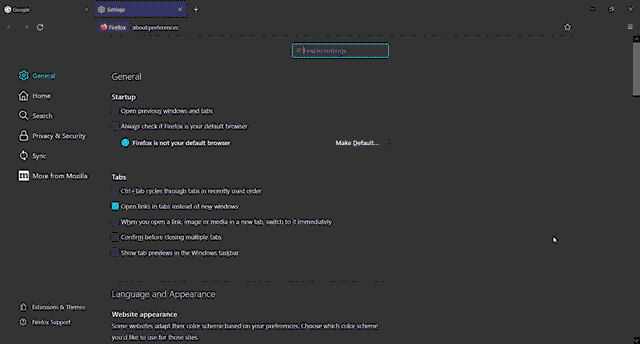

Clearing Cache and Cookies from Your Web Browser
What are Cache and Cookies anyway?
They're files that your browser uses every time you access a webpage. As an extreme simplification, Cache files store how a website looks, i.e., images, and styling files, while Cookies store how you interact with the site, i.e., what pages you clicked on or the items you put in a cart.
Why should I clear my Cache and Cookies? Are they dangerous?
Cookies have been in the news lately because they are used to track you across the web to serve you ads, which could pose a privacy risk. While these files are not dangerous on their own, they can take up hard drive space and, after a while, may slow down your browsing experience.
Clearing cache and cookies regularly are critical when working on web projects, as these files are actively updated. Your computer may be read from outdated files and render unexpected results.
Okay, so how do I clear my Cache and Cookies?
When following the steps below, note that you will lose all browsing history, including items you may have saved in a shopping cart. Bookmark any links you may need to refer to later. Use a password manager to save any log-in data and have it fill in the information for you.
Microsoft Edge (Version 102.0.1245.33)
- Open Microsoft Edge.
- Select Settings from the menu at the top right of the screen.
- Click Privacy, search, and services from the Settings menu.
- Scroll down to Clear browsing data and click Choose what to clear.
- Select All time from the drop-down to remove all files.
- Check the Cookies and other site data and Cached images and files checkboxes.
- Press the Clear now button.
Mozilla FireFox (Version 102.0.1245.33)
- Open Mozilla FireFox.
- Select Settings from the menu at the top right of the screen.
- Click Privacy & Security from the menu on the left side of the screen.
- Scroll down to Cookies and Site Data and click the Clear Data button.
- Confirm the Cookies and Site Data and Cached Web Content checkboxes are selected.
- Click the Clear button and select the Clear Now button when prompted.
Guidance from: Delete cookies in Microsoft Edge. https://support.microsoft.com/en-us/microsoft-edge/delete-cookies-in-microsoft-edge-63947406-40ac-c3b8-57b9-2a946a29ae09 Clear cookies and site data in Firefox. https://support.mozilla.org/en-US/kb/clear-cookies-and-site-data-firefox